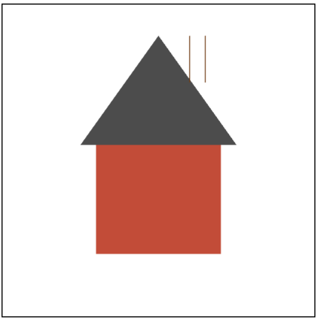
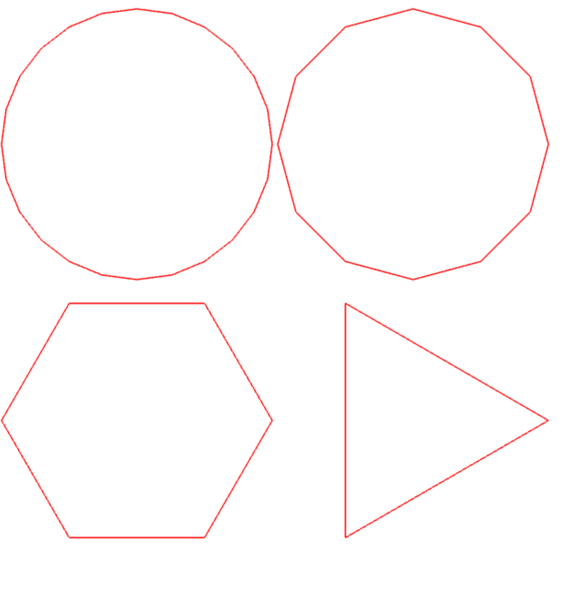
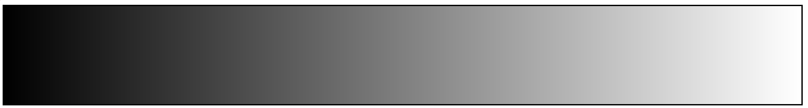
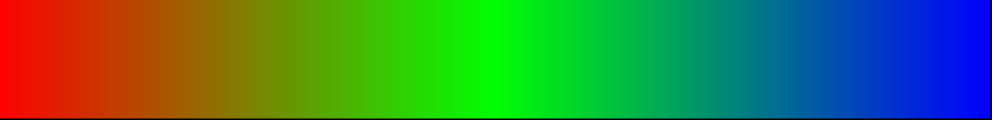
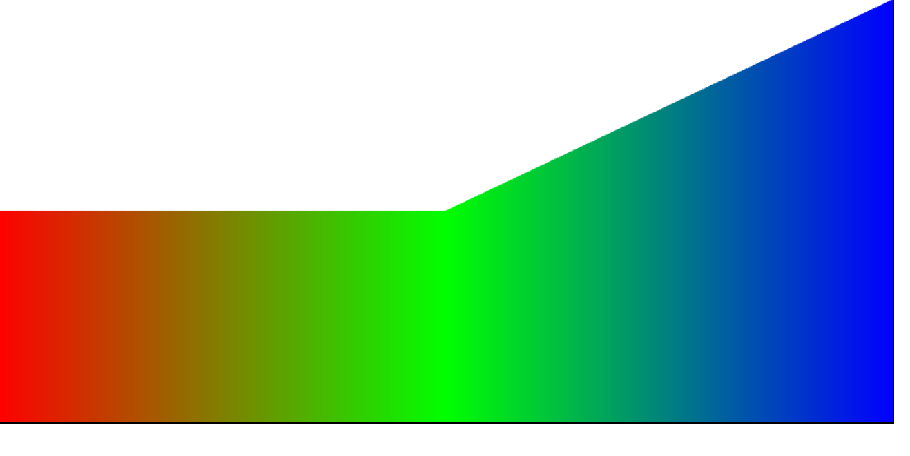
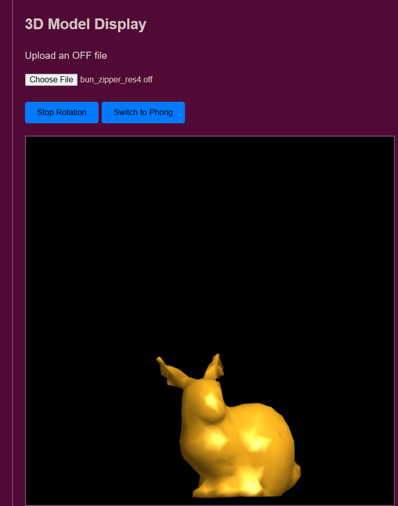

Computer Graphics • Spring 2025
A semester of learning what it actually takes to put a pixel on a screen. I came into this class thinking graphics was mostly about making cool visuals. I left understanding how much math, geometry, shaders, and problem solving are hidden behind every image we see.
01 • Introduction
Before this course, I thought computer graphics was mostly Photoshop, Blender, and animation software. I had no idea how low level graphics actually are.
Every image on a screen comes from coordinates, transformations, buffers, interpolation, shaders, and the GPU calculating thousands of tiny operations. Even simple visuals are built from math.
This portfolio is less about showing perfect renders and more about documenting what it actually felt like learning graphics from the ground up. Some projects surprised me, some frustrated me, and some completely changed how I think about digital images.
02 • The Work

Artifact 01
This assignment introduced me to manually building geometry with triangles. Every point had to be placed by hand using coordinates. The GPU then used shaders to color the shapes and display them on screen.
Honestly, my first reaction was basically: damn, all this work for one triangle?
I started thinking about giant kaleidoscope graphics and complicated visuals online, and suddenly I realized how many triangles, shaders, and calculations those must actually require. That was one of the first moments where graphics started feeling less like art software and more like applied mathematics.
What the viewer is looking at is a simple house made from primitive geometry. The body is built from triangles and the chimney is just rendered lines. Even something this simple still required understanding coordinates, buffers, shaders, and rendering setup.

Artifact 02
These shapes demonstrate how circles are approximated using polygons. The more vertices added, the smoother the shape appears.
What surprised me was realizing there are not really perfect circles in graphics. A circle is basically just a shape with enough points that your eyes stop noticing the edges.
The math behind this involved trigonometry using sine and cosine to calculate points around the shape. This assignment helped me understand how geometry and approximation work together inside graphics systems.



Artifact 03
These assignments explored gradients, interpolation, and how colors are calculated across surfaces.
I actually did the attribute interpolation version first. But the rainbow surprised me way more because the difference between fragment interpolation and attribute interpolation became really noticeable.
In the attribute version, colors are attached to vertices and blended across the surface. In the fragment shader version, color is calculated directly per pixel. Even though the results looked similar at first, understanding that the calculations were happening differently completely changed how I saw the rendering pipeline.
This was one of the assignments where shaders finally started making sense to me. The visuals were simple, but the logic behind them was deeper than I expected.
03 • Moment of Difficulty
The biggest moment of difficulty in this course was honestly understanding the point of growth in computer graphics.
For HW1, I originally used AI to help make my house look better because I already knew my hand made version was going to look really simple. The AI generated version had windows, outlines, doors, and extra detail, and I got caught up trying to out render everyone else instead of focusing on actually learning the material.
We ended up getting caught, and I almost got in trouble for academic dishonesty. At the time, I honestly did not fully understand the purpose of the course yet.
When I redid the assignment by hand, my real render was literally just a box with a triangle roof and two chimney lines. At first I thought it looked terrible.
But later in the semester, I realized that raw starting point was actually important. The course was never about instantly producing the most impressive render. It was about understanding how graphics actually work step by step.
Looking back, that simple house ended up meaning more to me than the polished AI version because it represented the point where I actually started learning.
04 • Final Assignment

Artifact 04
This project involved loading and rendering OFF models inside WebGL. I implemented lighting, normals, shading models, and object rotation.
I loaded the Stanford Bunny into the renderer and honestly it was awesome. Being able to rotate it and change the view directly inside my HTML page made everything from the semester finally feel real.
At first only half the bunny showed because the bottom half was getting cut off by my camera placement. I had to slowly move and adjust the model little by little until I was finally happy with where it sat on the screen.
What the viewer is looking at is a rendered 3D mesh with lighting calculations applied to its surface. Normals affect how light reflects across the bunny, and the shading model changes how smooth and realistic the surface appears.
Once it finally rotated correctly inside the browser, it genuinely felt rewarding because it pulled together almost every concept from the course.
05 • Reflection
I came into this course thinking graphics was mostly about making things look cool. By the end, I realized graphics is really about understanding how math becomes an image.
Every assignment forced me to think differently about what happens behind the screen. Coordinates become geometry, geometry becomes fragments, shaders calculate color, and the GPU turns all of it into something visible.
The biggest thing I learned was that progress in graphics is not instant. Most of the course was building understanding piece by piece. Looking back now, the simple projects ended up teaching me the most.
AI Use
AI tools were used to help refine wording and organize parts of this portfolio. The reflections, experiences, technical explanations, and personal observations are my own.